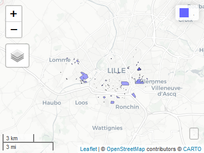

- Installation
- Indicateurs de consommation d’espace (accès libre)
- Indicateurs de prix (accès libre)
- Cartofriches (accès libre)
üöß Warning
Il s’agit d’une version de développement
üìò Info
Les wrappers d’API sont des outils qui facilitent l’utilisation des fonctionnalités offertes par une interface de programmation d’applications (API). Ils simplifient la communication entre une application et une API en gérant les détails techniques et en offrant une interface plus conviviale. Les wrappers d’API permettent aux développeurs de se concentrer sur la logique de leur application plutôt que sur les aspects techniques de l’intégration avec l’API. Ils accélèrent le développement et améliorent la productivité en réduisant la quantité de code nécessaire.
Grâce à r.apifoncier vous pouvez accéder aux données disponibles par l’API données foncières du cerema.
Vous pouvez installer r.apifoncier depuis GitHub avec le code suivant :
# install.packages("devtools")
devtools::install_github("rcadot/r.apifoncier")Indicateurs de consommation d’espace (accès libre)
Les données sont disponibles à deux échelles : communes et départements.
En indiquant le code INSEE d’une commune au format numeric ou character, on obtient un dataframe des consommations.
library(r.apifoncier)
ind_conso_espace_communes(59001)
#> annee idcom idcomtxt naf_arti conso_act conso_hab conso_mix conso_inc
#> 1 2009 59001 Abancourt 13286 0 13286 0 0
#> 2 2010 59001 Abancourt 13287 0 13287 0 0
#> 3 2011 59001 Abancourt 0 0 0 0 0
#> 4 2012 59001 Abancourt 0 0 0 0 0
#> 5 2013 59001 Abancourt 0 0 0 0 0
#> 6 2014 59001 Abancourt 0 0 0 0 0
#> 7 2015 59001 Abancourt 3733 0 3733 0 0
#> 8 2016 59001 Abancourt 0 0 0 0 0
#> 9 2017 59001 Abancourt 0 0 0 0 0
#> 10 2018 59001 Abancourt 0 0 0 0 0
#> 11 2019 59001 Abancourt 0 0 0 0 0
#> 12 2020 59001 Abancourt 0 0 0 0 0La fonction g_ind_conso_espace_communes() permet de générer un graphique plotly de la consommation sur la commune de son choix.
ind_conso_espace_communes_g(59350)Par défaut, les consommations sont affichées en hectares, mais on peut les indiquer en m² en choisissant hectare=FALSE.
ind_conso_espace_communes_g(
code_insee = 59350,
hectare = FALSE,
affichage = 'total',
legende = FALSE
)
Indicateurs de prix (accès libre)
Les indicateurs de prix sont disponibles annuellement et de manière triennale à plusieurs échelles :
- Régions ;
- Départements ;
- Aires d’attractivités des villes ;
- EPCI ;
- Communes.
ind_dv3f_com_annuel('59350') %>%
dplyr::select(1:10) # Le résultat contient 617 colonnes
#> annee codgeo libgeo nbtrans_cod1 valeurfonc_sum_cod1 nbtrans_cod2
#> 1 2010 59350 Lille 5120 837659942 57
#> 2 2011 59350 Lille 4474 882766180 52
#> 3 2012 59350 Lille 4200 813426374 78
#> 4 2013 59350 Lille 3971 781613569 45
#> 5 2014 59350 Lille 3931 804964493 40
#> 6 2015 59350 Lille 4472 913893573 36
#> 7 2016 59350 Lille 4708 1016164793 43
#> 8 2017 59350 Lille 5387 1315158597 49
#> 9 2018 59350 Lille 5587 1533348525 50
#> 10 2019 59350 Lille 5914 1316236006 45
#> 11 2020 59350 Lille 5115 1338281971 52
#> 12 2021 59350 Lille 5638 1368565071 74
#> 13 2022 59350 Lille 5188 1793537471 44
#> valeurfonc_sum_cod2 nbtrans_cod11 valeurfonc_sum_cod11 nbtrans_cod111
#> 1 11280409 1018 191957219 1009
#> 2 12029527 1007 193464212 1001
#> 3 10470981 898 185220834 888
#> 4 9220512 900 176372788 891
#> 5 9204725 809 158841064 800
#> 6 5374163 950 190094699 939
#> 7 18337891 1074 218153085 1058
#> 8 21091314 1066 218596803 1045
#> 9 8863366 999 209565961 986
#> 10 21399434 1129 260309641 1125
#> 11 22967299 1068 266500635 1057
#> 12 18772045 1102 286547302 1092
#> 13 19906913 1030 281169115 1020Cartofriches (accès libre)
On peut accéder aux friches, soit par département, commune ou encore à partir d’une emprise au format WGS84
cartofriches_friches(coddep = 59,page_size = 3)
#> # A tibble: 3 × 15
#> site_id site_nom site_type site_adresse site_statut comm_nom comm_insee dep
#> <chr> <chr> <chr> <lgl> <chr> <chr> <chr> <chr>
#> 1 59002_1… carrièr… inconnu NA friche pot… ABSCON 59002 59
#> 2 59002_3… Atelier… inconnu NA friche pot… ABSCON 59002 59
#> 3 59005_4… Distill… inconnu NA friche pot… ALLENNE… 59005 59
#> # ℹ 7 more variables: proprio_personne <chr>, unite_fonciere_surface <dbl>,
#> # unite_fonciere_refcad <chr>, source_nom <chr>, proprio_type_lib <list>,
#> # source_nature <chr>, urba_zone_type <lgl>
cartofriches_friches(code_insee = 59350,page_size = 3)
#> # A tibble: 3 × 15
#> site_id site_nom site_type site_adresse site_statut comm_nom comm_insee dep
#> <chr> <chr> <chr> <lgl> <chr> <chr> <chr> <chr>
#> 1 59350_1… Teintur… inconnu NA friche pot… LILLE 59350 59
#> 2 59350_1… WILVIA … inconnu NA friche pot… LILLE 59350 59
#> 3 59350_1… Atelier… inconnu NA friche pot… LILLE 59350 59
#> # ℹ 7 more variables: proprio_personne <chr>, unite_fonciere_surface <dbl>,
#> # unite_fonciere_refcad <chr>, source_nom <chr>, proprio_type_lib <list>,
#> # source_nature <chr>, urba_zone_type <chr>
cartofriches_friches(in_bbox = '2.827642,50.495958,3.32616,50.767734',page_size = 2)
#> # A tibble: 2 × 15
#> site_id site_nom site_type site_adresse site_statut comm_nom comm_insee dep
#> <chr> <chr> <chr> <lgl> <chr> <chr> <chr> <chr>
#> 1 59005_4… Distill… inconnu NA friche pot… ALLENNE… 59005 59
#> 2 59009_1… SA Atel… inconnu NA inconnu VILLENE… 59009 59
#> # ℹ 7 more variables: proprio_personne <chr>, unite_fonciere_surface <dbl>,
#> # unite_fonciere_refcad <chr>, source_nom <chr>, proprio_type_lib <list>,
#> # source_nature <chr>, urba_zone_type <chr>On peut également accéder aux objets géographiques associés.
#> Reading layer `OGRGeoJSON' from data source
#> `{"type":"FeatureCollection","count":135,"next":"https://apidf-preprod.cerema.fr/cartofriches/geofriches/?code_insee=59350&page=2&page_size=10","previous":null,"features":[{"id":"59350_10190","type":"Feature","geometry":{"type":"MultiPolygon","coordinates":[[[[3.074442,50.616628],[3.074441,50.616573],[3.074484,50.616571],[3.074482,50.616483],[3.074671,50.616481],[3.074676,50.616624],[3.074442,50.616628]]]]},"properties":{"site_nom":"Teinturerie","site_type":"inconnu","site_adresse":null,"site_statut":"friche potentielle","comm_nom":"LILLE","comm_insee":"59350","dep":"59","proprio_personne":"personne morale","unite_fonciere_surface":234.17,"unite_fonciere_refcad":"59350000IK0025","source_nom":"Site Basias ou Basol non vérifié par le Cerema","proprio_type_lib":["DEPARTEMENT"],"source_nature":"MTE non vérifié","urba_zone_type":"U"}},{"id":"59350_10192","type":"Feature","geometry":{"type":"MultiPolygon","coordinates":[[[[3.074442,50.616628],[3.074441,50.616573],[3.074484,50.616571],[3.074482,50.616483],[3.074671,50.616481],[3.074676,50.616624],[3.074442,50.616628]]]]},"properties":{"site_nom":"WILVIA MEUBLEX","site_type":"inconnu","site_adresse":null,"site_statut":"friche potentielle","comm_nom":"LILLE","comm_insee":"59350","dep":"59","proprio_personne":"personne morale","unite_fonciere_surface":234.17,"unite_fonciere_refcad":"59350000IK0025","source_nom":"Site Basias ou Basol non vérifié par le Cerema","proprio_type_lib":["DEPARTEMENT"],"source_nature":"MTE non vérifié","urba_zone_type":"U"}},{"id":"59350_10209","type":"Feature","geometry":{"type":"MultiPolygon","coordinates":[[[[3.074442,50.616628],[3.074441,50.616573],[3.074484,50.616571],[3.074482,50.616483],[3.074671,50.616481],[3.074676,50.616624],[3.074442,50.616628]]]]},"properties":{"site_nom":"Atelier de mécanique","site_type":"inconnu","site_adresse":null,"site_statut":"friche potentielle","comm_nom":"LILLE","comm_insee":"59350","dep":"59","proprio_personne":"personne morale","unite_fonciere_surface":234.17,"unite_fonciere_refcad":"59350000IK0025","source_nom":"Site Basias ou Basol non vérifié par le Cerema","proprio_type_lib":["DEPARTEMENT"],"source_nature":"MTE non vérifié","urba_zone_type":"U"}},{"id":"59350_10210","type":"Feature","geometry":{"type":"MultiPolygon","coordinates":[[[[3.074442,50.616628],[3.074441,50.616573],[3.074484,50.616571],[3.074482,50.616483],[3.074671,50.616481],[3.074676,50.616624],[3.074442,50.616628]]]]},"properties":{"site_nom":"Station Service Esso","site_type":"inconnu","site_adresse":null,"site_statut":"friche potentielle","comm_nom":"LILLE","comm_insee":"59350","dep":"59","proprio_personne":"personne morale","unite_fonciere_surface":234.17,"unite_fonciere_refcad":"59350000IK0025","source_nom":"Site Basias ou Basol non vérifié par le Cerema","proprio_type_lib":["DEPARTEMENT"],"source_nature":"MTE non vérifié","urba_zone_type":"U"}},{"id":"59350_10211","type":"Feature","geometry":{"type":"MultiPolygon","coordinates":[[[[3.074442,50.616628],[3.074441,50.616573],[3.074484,50.616571],[3.074482,50.616483],[3.074671,50.616481],[3.074676,50.616624],[3.074442,50.616628]]]]},"properties":{"site_nom":"Assitance et Inspection Techniques","site_type":"inconnu","site_adresse":null,"site_statut":"friche potentielle","comm_nom":"LILLE","comm_insee":"59350","dep":"59","proprio_personne":"personne morale","unite_fonciere_surface":234.17,"unite_fonciere_refcad":"59350000IK0025","source_nom":"Site Basias ou Basol non vérifié par le Cerema","proprio_type_lib":["DEPARTEMENT"],"source_nature":"MTE non vérifié","urba_zone_type":"U"}},{"id":"59350_10795","type":"Feature","geometry":{"type":"MultiPolygon","coordinates":[[[[3.040053,50.612012],[3.040189,50.612037],[3.04014,50.612142],[3.040004,50.612118],[3.040053,50.612012]]]]},"properties":{"site_nom":"Construction de Wagons","site_type":"inconnu","site_adresse":null,"site_statut":"inconnu","comm_nom":"LILLE","comm_insee":"59350","dep":"59","proprio_personne":"personne morale","unite_fonciere_surface":122.92,"unite_fonciere_refcad":"59350000DV0166","source_nom":"Site Basias ou Basol vérifié par le Cerema en 2020","proprio_type_lib":["SCI - SOCIETE CIVILE IMMOBILIERE"],"source_nature":"MTE","urba_zone_type":"U"}},{"id":"59350_1102","type":"Feature","geometry":{"type":"MultiPolygon","coordinates":[[[[3.067128,50.62149],[3.067034,50.621521],[3.06696,50.621545],[3.066901,50.621565],[3.066878,50.621573],[3.066726,50.621622],[3.066779,50.621686],[3.066876,50.621653],[3.06693,50.621634],[3.067011,50.621606],[3.067084,50.621581],[3.067157,50.621555],[3.067181,50.621547],[3.067154,50.621523],[3.067153,50.621522],[3.067128,50.62149]]]]},"properties":{"site_nom":"Atelier de constructions mécaniques","site_type":"inconnu","site_adresse":null,"site_statut":"friche potentielle","comm_nom":"LILLE","comm_insee":"59350","dep":"59","proprio_personne":"personne physique","unite_fonciere_surface":248.12,"unite_fonciere_refcad":"59350000OX0165|59350000OX0166|59350000OX0167|59350000OX0176","source_nom":"Site Basias ou Basol non vérifié par le Cerema","proprio_type_lib":["PERSONNE PHYSIQUE"],"source_nature":"MTE non vérifié","urba_zone_type":"U"}},{"id":"59350_11724","type":"Feature","geometry":{"type":"MultiPolygon","coordinates":[[[[3.019002,50.630966],[3.019843,50.630163],[3.019392,50.629857],[3.018453,50.630755],[3.019002,50.630966]]]]},"properties":{"site_nom":"Appel à projet Recyclage Foncier 2021 2nde édition (Dossier N° 6057240) - Hauts-de-France - 59 - Nord - Lille (59260) - friche: LOMME EURATECHNOLOGIE - ILOT 28 29","site_type":"inconnu","site_adresse":null,"site_statut":"friche avec projet","comm_nom":"LILLE","comm_insee":"59350","dep":"59","proprio_personne":"personne morale","unite_fonciere_surface":5390.18,"unite_fonciere_refcad":"593503550C6992|593503550C6993","source_nom":"Appel à projet Fonds Friches","proprio_type_lib":["SEM OU SPLA INDETERMINE"],"source_nature":"fond friche","urba_zone_type":"U"}},{"id":"59350_11777","type":"Feature","geometry":{"type":"MultiPolygon","coordinates":[[[[3.05531,50.608316],[3.055261,50.608327],[3.055315,50.608345],[3.055327,50.608349],[3.055344,50.608348],[3.055404,50.608696],[3.055499,50.608733],[3.055499,50.608733],[3.055517,50.608836],[3.055541,50.608976],[3.055571,50.609152],[3.055653,50.609632],[3.055735,50.610111],[3.055795,50.610459],[3.055832,50.610457],[3.055843,50.610513],[3.055858,50.610569],[3.055877,50.610624],[3.055899,50.610678],[3.05592,50.610719],[3.055946,50.610758],[3.055978,50.610796],[3.056014,50.610832],[3.056159,50.610751],[3.056336,50.610712],[3.057726,50.610411],[3.057913,50.610622],[3.058125,50.610584],[3.05975,50.610294],[3.060164,50.61022],[3.06023,50.610204],[3.06031,50.610186],[3.060389,50.610167],[3.060519,50.610137],[3.060515,50.610127],[3.06052,50.610119],[3.060534,50.610117],[3.060285,50.609651],[3.060012,50.609708],[3.060012,50.609708],[3.060285,50.609651],[3.060263,50.609609],[3.06024,50.609566],[3.060217,50.609523],[3.060217,50.609523],[3.060217,50.609523],[3.059925,50.60897],[3.059898,50.60892],[3.059712,50.608568],[3.059688,50.608524],[3.059658,50.60847],[3.059615,50.608479],[3.059594,50.608444],[3.059512,50.608463],[3.058616,50.608663],[3.058376,50.608717],[3.057752,50.608857],[3.057725,50.608805],[3.057693,50.608745],[3.057565,50.608525],[3.056209,50.608817],[3.056099,50.60884],[3.055972,50.608608],[3.055972,50.608608],[3.055972,50.608608],[3.055972,50.608608],[3.056069,50.608587],[3.055873,50.60823],[3.055909,50.608182],[3.055744,50.608219],[3.055476,50.608278],[3.055424,50.60829],[3.055362,50.608304],[3.05531,50.608316]],[[3.060217,50.609523],[3.060217,50.609523],[3.060217,50.609523],[3.060217,50.609523],[3.060217,50.609523]],[[3.060152,50.609537],[3.060057,50.609558],[3.060036,50.609562],[3.060036,50.609562],[3.060057,50.609558],[3.060152,50.609537],[3.060152,50.609537]],[[3.055933,50.608536],[3.055922,50.608517],[3.055741,50.608556],[3.055741,50.608556],[3.055922,50.608517],[3.055933,50.608536],[3.055933,50.608536]],[[3.059963,50.609578],[3.059945,50.609582],[3.059945,50.609582],[3.059963,50.609578],[3.059963,50.609578]],[[3.059989,50.609666],[3.05999,50.609667],[3.05999,50.609667],[3.05999,50.609667],[3.059989,50.609666],[3.059989,50.609666],[3.059989,50.609666]]]]},"properties":{"site_nom":"Cie Européenne d'accumulateurs (SA), anc. TUDOR (Cie Générale d'Electricité) CEAC","site_type":"inconnu","site_adresse":null,"site_statut":"inconnu","comm_nom":"LILLE","comm_insee":"59350","dep":"59","proprio_personne":"personne morale","unite_fonciere_surface":67896.9,"unite_fonciere_refcad":"59350000DK0124|59350000DK0125|59350000DK0126|59350000DK0326|59350000DK0329|59350000DK0332|59350000DK0341|59350000DK0342|59350000DK0508","source_nom":"Friche étude Ademe 2021, intéressante pour du PV au sol","proprio_type_lib":["ETABLISSEMENT INDUSTRIEL"],"source_nature":"Ademe","urba_zone_type":"U"}},{"id":"59350_11787","type":"Feature","geometry":{"type":"MultiPolygon","coordinates":[[[[3.046493,50.61306],[3.046455,50.613068],[3.046211,50.613151],[3.045998,50.613262],[3.045822,50.613398],[3.045692,50.613554],[3.045612,50.613722],[3.045585,50.613897],[3.045612,50.614072],[3.045693,50.614241],[3.045823,50.614396],[3.045999,50.614532],[3.046213,50.614643],[3.046457,50.614726],[3.046721,50.614777],[3.046996,50.614794],[3.047272,50.614777],[3.047536,50.614726],[3.047604,50.614702],[3.047642,50.614695],[3.047886,50.614612],[3.048099,50.6145],[3.048275,50.614364],[3.048405,50.614209],[3.048485,50.614041],[3.048512,50.613866],[3.048485,50.61369],[3.048404,50.613522],[3.048274,50.613367],[3.048098,50.613231],[3.047884,50.61312],[3.04764,50.613037],[3.047376,50.612986],[3.047101,50.612969],[3.046825,50.612986],[3.046561,50.613037],[3.046493,50.61306]]]]},"properties":{"site_nom":"Appel à projet Recyclage Foncier 2021 2nde édition (Dossier N° 5781164) - Hauts-de-France - 59 - Nord - Lille (59000) - friche: 93-95 rue Balzac - Lille","site_type":"inconnu","site_adresse":null,"site_statut":"friche avec projet","comm_nom":"LILLE","comm_insee":"59350","dep":"59","proprio_personne":"personne morale","unite_fonciere_surface":1891.81,"unite_fonciere_refcad":"59350000DR0324|59350000DR0325|59350000DR0326|59350000DR0329|59350000DR0330|59350000DR0331|59350000DR0332|59350000DR0333|59350000DR0334|59350000DR0335|59350000DR0336|59350000DR0337|59350000DR0338|59350000DR0339|59350000DR0340","source_nom":"Appel à projet Fonds Friches","proprio_type_lib":["INTERCOMMUNALITE"],"source_nature":"fond friche","urba_zone_type":"U"}}]}'
#> using driver `GeoJSON'
#> Simple feature collection with 10 features and 15 fields
#> Geometry type: MULTIPOLYGON
#> Dimension: XY
#> Bounding box: xmin: 3.018453 ymin: 50.60818 xmax: 3.074676 ymax: 50.63097
#> Geodetic CRS: WGS 84